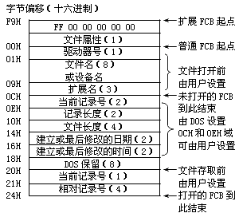
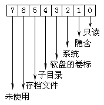

文件控制块，英文是File Control Block，简写为FCB，它实际上是一组具有固定格式的数据。我们前面提到过当我们打开一个文件后DOS要取得这个文件的特征信息，文件控制块就是由这些信息组成的。所以我们说文件控制块的作用就是操作系统和要处理的文件之间相联系的一个纽带，操作系统要依靠FCB中的数据完成对文件的读或写操作。DOS的文件控制块的结构如图7-1所示：

通过图7-1可以看到，FCB具有"普通"和"扩展"两种类型，扩展FCB就是在普通FCB前面增加了7个字节的数据，在这7个字节中首字节是－1，末字节表示文件的属性，其余5字节均为0。这里就出现了一个"文件属性"的概念，我们在后面会详细加以讨论。
同时还可以看到无论是普通FCB还是扩展FCB都有"打开"与"未打开"之分，就普通FCB而言，从偏移00H开始至偏移0CH是未打开的FCB，"未打开"的含义就是说这部分数据要在执行"打开文件"操作之前就要填好。换句话说，这部分信息要由我们编制程序时定义出来。
这并不难理解，我们要打开或建立一个文件，自然要首先给出文件名、属性以及这个文件所在的驱动器号等数据，这样操作系统才能知道我们要处理的对象是谁。从偏移0CH至偏移24H是打开的FCB，可以想到这部分数据是在执行"打开"操作之后由操作系统填入的。我们前面说过执行打开操作的意义就是让操作系统寻找被处理文件并且取得这个文件的特征信息，这些信息就存放在打开的FCB中。在这里又出现了两个新知识点--记录块和记录。下面我们就来讨论一下这几个新知识点。
在现实生活中我们所看到的文件是具有不同性质的，比如有一些文件在封套上写有"保密"的字样，这样的文件就不是随便哪个人就可以查阅。磁盘中的文件同样具有这样的性质，大家可能知道磁盘上有些文件是"隐含"的，这样的文件用DIR命令列不出文件名。还有一些文件虽然可以列出名字，但是却不能用DEL命令将其删除。
DOS系统提供了一个名为"ATTRIB"的命令，这个命令用于设置文件的属性，利用这个命令 我们可以将一个文件设成只读、隐含或系统文件。具有不同属性的文件在一般操作上具有不同的表现，如DIR命令无法列出隐含或系统文件，DEL命令无法删除只读、隐含或系统文件等等，我想这些现象大家平时一定已有所了解。我们现在就来讨论一下DOS是如何规定文件属性的。
我们习惯于说某某文件具有什么什么属性，其实这个说法是不全面的。真正具有属性的并不是文件，严格地说应该是目录。我们知道每个文件都有文件名、长度以及建立或最后修改的日期等特征信息，这些信息组成了这个文件的目录项，DOS将各个目录项组织在一起存放在磁盘上的特定区域内，构成了磁盘的目录表（FDT--File Directory Table）。我们平时使用DIR命令所看到的就是这个目录表。
除了文件目录外我们知道磁盘上还有子目录名和卷标，这两者和文件的目录是混存在一个表中的，DOS之所以能区分子目录、卷标和文件就是依靠它们所具有的不同属性。所以我们说属性并非是文件所独有，子目录名与磁盘卷标同样具有属性。通过文件控制块我们可以看到DOS用一个字节数据表示文件的属性，DOS把这一个字节数据和目录项的其它特征信息放在一起存入目录表中，这个字节是这样定义的（图7-2）：

属性字节的高2位没有使用，其余6个位表征6种不同的属性。可以看到若一个文件的属性字节为01H，那么这个文件就 是只读文件，DEL命令就无法删除这个文件。如果一个文件的属性字节是03H，那么这个文件就具有只读与隐含两种属性，它既无法删除同时也无法用DIR列出。若某个目录项的属性字节为08H，即属性字节的bit3位＝1，那么DOS就将这个目录项当作卷标。同样若某目录项的属性为10H，这个目录项就会被当做子目录名。